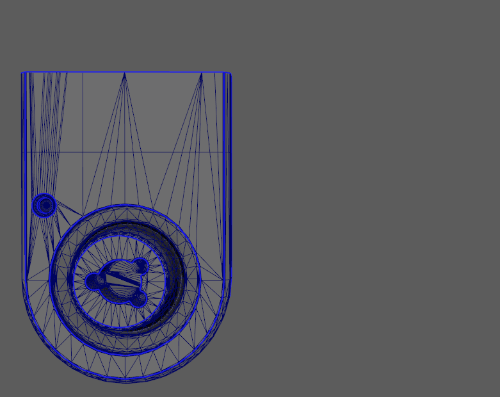
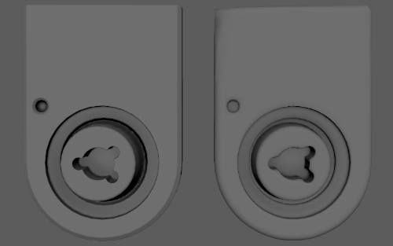
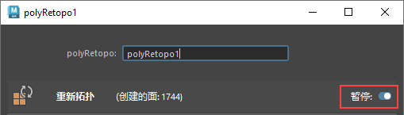
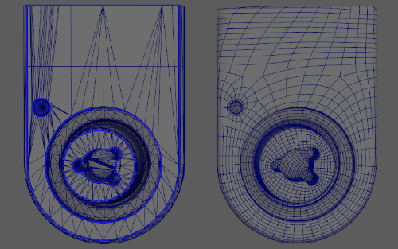
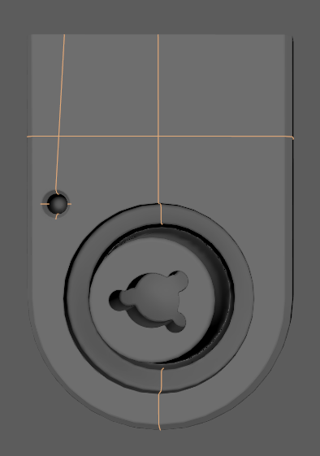
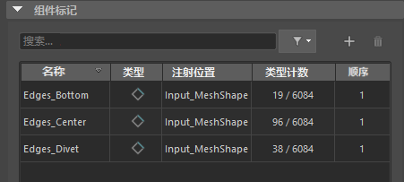
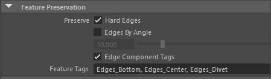
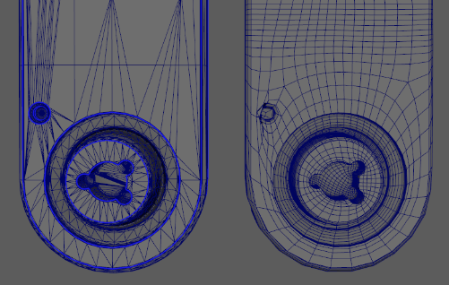

通过组件标记，可以创建组件的命名组以使几何体变形。在重新拓扑工作流中，可以使用边组件标记显式定义网格区域以保留网格细节。
使用边组件标记来保留特征对于引导特定区域中结果网格的边流非常有用。与“保持原始”(Keep Original)选项结合使用时，可以在输入网格的组件标记中添加和移除边，并查看重新拓扑的结果网格上动态显示的更新。
使用组件标记保留网格区域
尽管可以在运行“重新拓扑”(Retopologize)之前定义组件标记，但以下示例说明了如何在运行“重新拓扑”(Retopologize)后应用组件标记。
- 选择要重新拓扑的对象。
- 选择“网格 > 重新拓扑”(Mesh > Retopologize)，并确保已设置以下内容：
- 单击“重新拓扑”(Retopologize)。
运行
“重新拓扑”(Retopologize)后，输入网格和重新拓扑网格将放置在场景中的同一位置。一旦我们将重新拓扑网格移过来，我们就可以看到结果。

总体上，重新拓扑的网格已平滑：

模型的 divet 和底边已圆化。
由于输入网格具有显式定义的硬边，因此我们可以使用它们对边流进行导向，并在重新拓扑的网格上保留部分边。
- 选择输入网格。
- 在“属性编辑器”(Attribute Editor)中，在 polyRetopo 节点中启用“暂停”(Pause)。

现在，重新拓扑算法已暂停，在禁用“暂停”(Pause)之前，它不会再次运行。此步骤有助于更快、更容易地使用网格。
- 在 polyRetopo 节点的“特征保留”(Feature Preservation)部分中，启用“保留 > 硬边”(Preserve > Hard Edges)。
在以下示例中，输入网格上的亮蓝色边标记为硬边。启用
“保留 >
硬边”(Preserve > Hard Edges)后，重新拓扑的网格将变得更加清晰。

现在，我们在输入网格上添加组件标记，以进一步影响重新拓扑网格的边流。
- 开始定义组件标记。有关详细步骤的完整列表，请参见为几何体指定组件标记。
在此示例中，我们选择了左下 divet 中的边、沿底边的边和沿输入网格中心的边：

提示： 单击一条边，然后单击“选择 > 连续边”(Select > Continuous Edges)以快速选择一组边。
在此示例中，组件标记名称与选定边的位置相对应。例如，divet 中的边是名为 Edges_Divet 的组件标记的成员。
可以在
“属性编辑器”(Attribute Editor)中输入网格的形状节点的
“组件标记”(Component Tags)部分编辑组件标记的成员身份。

现在已经定义了组件标记，我们需要告知“重新拓扑”(Retopologize)算法使用它们。
- 在“属性编辑器”(Attribute Editor)中，选择 polyRetopo 节点。
- 在“特征保留”(Feature Preservation)部分中，启用“边组件标记”(Edge Component Tags)。
- 在“特征标记”(Feature Tags)字段中，输入组件标记的名称。
该字段支持以逗号分隔的边组件标记列表。此外，它还支持 <名称>* 格式的通配符。在此示例中，所有组件标记都以字母“E”开头，因此通配符“E*”是有效的。

- 在 polyRetopo 节点中，禁用“暂停”(Pause)。
重新拓扑算法会自动运行，重新拓扑网格的边流会更新。
在 divet 周围的区域中，边流改进效果尤为明显。
